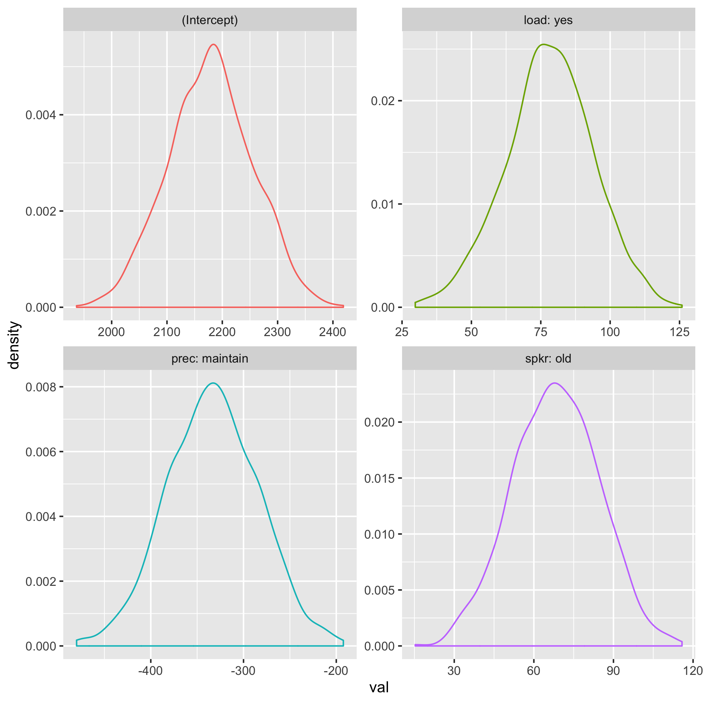
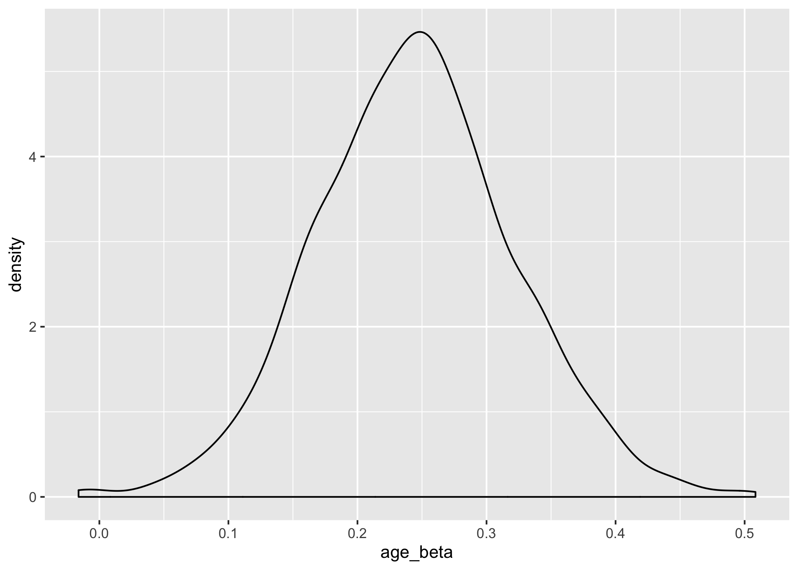

julia> using MixedModels # run mixed MixedModels julia> using MixedModelsSim # simulation functions for mixed models julia> using RCall, RData # call R functions from inside Julia julia> using DataFrames, Tables, DataFramesMeta # work with data tables julia> using Random, StatsBase # statistical functionss
Function for returning p-values for simulated iterations.
function simulate_waldtests( rng::AbstractRNG, n::Integer, morig::MixedModel{T}; β = morig.β, σ = morig.σ, θ = morig.θ) where {T} mod = deepcopy(morig) replicate(n) do mod = simulate!(rng, mod, β = β, σ = σ, θ = θ) refit!(mod) ct = coeftable(mod) ( z = ct.cols[3], p = ct.cols[ct.pvalcol], ) end end
simulate_waldtests (generic function with 1 method)
Load existing data from this morning's tutorial. Set the contrasts and run model 4.
# load data kb07 = load("data/kb07_exp2_rt.rds"); # set contrasts const HC = HelmertCoding(); const contrasts = Dict(:spkr => HC, :prec => HC, :load=> HC); # define formula f4 = @formula(rt_trunc ~ 1 + spkr+prec+load + (1|subj) + (1+prec|item)); # fit model m4 = fit(MixedModel, f4, kb07, contrasts=contrasts)
Linear mixed model fit by maximum likelihood
rt_trunc ~ 1 + spkr + prec + load + (1 | subj) + (1 + prec | item)
logLik -2 logLik AIC BIC
-1.43319251×10⁴ 2.86638501×10⁴ 2.86818501×10⁴ 2.87312548×10⁴
Variance components:
Column Variance Std.Dev. Corr.
item (Intercept) 133015.240 364.71254
prec: maintain 63766.936 252.52116 -0.70
subj (Intercept) 88819.437 298.02590
Residual 462443.388 680.03190
Number of obs: 1789; levels of grouping factors: 32, 56
Fixed-effects parameters:
───────────────────────────────────────────────────────
Estimate Std.Error z value P(>|z|)
───────────────────────────────────────────────────────
(Intercept) 2181.85 77.4681 28.1645 <1e-99
spkr: old 67.879 16.0785 4.22172 <1e-4
prec: maintain -333.791 47.4472 -7.03499 <1e-11
load: yes 78.5904 16.0785 4.88792 <1e-5
───────────────────────────────────────────────────────
Use the parametricbootstrap() function to run 1000 iterations of data sampled using the parameters from m4. Set up a random seed to make the simulation reproducible. You can use your favourite number.
# seed for reproducibility rnd = MersenneTwister(8675309); # run 1000 iterations b4 = parametricbootstrap(rnd, 1000, m4); beta_df = reduce(hcat, b4.β)' |> DataFrame; rename!(beta_df, coefnames(m4));
@rput beta_df; R""" library(tidyverse) beta_df %>% mutate(iter = row_number()) %>% gather(var, val, 1:4) %>% ggplot(aes(val, color = var)) + geom_density() + facet_wrap(~var) ggsave("betas.png") """
RObject{NilSxp}
NULL

# run 1000 simulations with original parameters p4 = simulate_waldtests(rnd, 1000, m4); # get a table of p-values pvals = columntable(p4).p; # make array of coefficient names and their power power = Dict() alpha = 0.05 # justify your alpha for (i, nm) in enumerate(coefnames(m4)) power[nm] = mean(getindex.(pvals,i) .< alpha) end power
Dict{Any,Any} with 4 entries:
"spkr: old" => 0.99
"prec: maintain" => 1.0
"(Intercept)" => 1.0
"load: yes" => 1.0
Let's say we want to check our power to detect effects of spkr, prec, and load that are half the size of our pilot data.
newβ = m4.β newβ[2:4] = m4.β[2:4]/2 p4_half = simulate_waldtests(rnd, 1000, m4, β = newβ); # get a table of p-values pvals = columntable(p4_half).p; # make array of coefficient names and their power power = Dict() alpha = 0.05 # justify your alpha for (i, nm) in enumerate(coefnames(m4)) power[nm] = mean(getindex.(pvals,i) .< alpha) end power
Dict{Any,Any} with 4 entries:
"spkr: old" => 0.533
"prec: maintain" => 0.945
"(Intercept)" => 1.0
"load: yes" => 0.707
Custom function for simulating data in julia.
This is for a design with a between-subjects factor of age (O or Y) and sub_n subjects per group. Each subject responsed to item_n items. Create a simulated data structure with simdat(sub_n, item_n).
function simdat(sub_n, item_n) ages = vcat( repeat(["O"], sub_n), repeat(["Y"], sub_n) ); subject = (subj = nlevels(sub_n*2), age = ages); item = (item = nlevels(item_n, "I"),) design = factorproduct(item, subject) |> DataFrame; dat = @linq design |> transform(dv = randn(sub_n*2*item_n)) |> pooled! end #dat = simdat(30, 20);
Or you can use sim_design() in {faux} to set up a data structure. Don't worry about setting means and SDs, we'll simulate null effects and add fixed and random effects structures directly to parametricbootstrap or simulate_waldtests.
R""" dat <- faux::sim_design( within = list(item = faux::make_id(20, "I")), between = list(age = c("O", "Y")), n = 30, dv = "dv", id = "subj", plot = FALSE, long = TRUE ) """; dat = rcopy(R"dat");
f1 = @formula dv ~ 1 + age + (1|item) + (1|subj); m1 = fit(MixedModel, f1, dat) m1.β m1.σ m1.θ
2-element Array{Float64,1}:
0.03530723685280526
0.04973118654478417
Set a seed for reproducibility
specify new β, σ, and θ
rnd = MersenneTwister(8675309); new_beta = [0, 0.25] new_sigma = 1.0 new_theta = [0.2, 0.2] b1 = parametricbootstrap(rnd, 1000, m1, β = new_beta, σ = new_sigma, θ = new_theta);
age_beta = getindex.(b1.β, 2) @rput age_beta; R""" library(ggplot2) ggplot() + geom_density(aes(x = age_beta)) ggsave("file.png", width = 7, height = 5) """;

zp = simulate_waldtests(rnd,1000,m1, β = new_beta, σ = new_sigma, θ = new_theta); coefnames(m1) pvals = columntable(zp).p mean(getindex.(pvals,1) .< 0.05) mean(getindex.(pvals,2) .< 0.05)
0.893